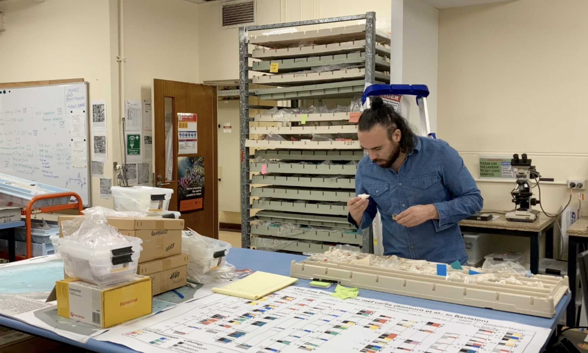

Improving sea-level reconstructions by precisely dating alteration phases in highly altered corals. Methods: micro-sampling, MC-ICP-MS, trace-element screening.
MoreIsotope geochemist and founder of SPICe Lab SpA (Lanco, Los Ríos, Chile, 2025). PhD, The University of Queensland. Postdoctoral Research Associate, Princeton University, 2023–Sept 2025. I specialize in carbonate systems, U–Th geochronology, and coral paleoclimate, integrating LA-ICP-MS/MC-ICP-MS with Python-driven analysis to reconstruct climate and sea-level change.

My research bridges geochronology, geochemistry, and paleoclimate. I investigate past climate and sea-level variability using coral archives and carbonate systems, with expertise in U–Th geochronology, trace-element geochemistry, and multi-instrument workflows (LA-ICP-MS, MC-ICP-MS, LIBS, micro-CT/3D, SEM). I combine rigorous laboratory methods with Python-based data processing, time-series analysis, and QA/QC for low-level trace-element detection (including REEs).
I’m an isotope geochemist who integrates geochronology, analytical chemistry, and climate reconstruction to understand how reef systems and sea level have changed through time. From 2023 to September 2025 I was a Postdoctoral Research Associate at Princeton University, where I investigated past climate and sea-level variability using coral archives and other carbonate materials. My technical expertise spans U–Th geochronology; radiogenic and stable isotope analysis; trace-element and REE geochemistry; and advanced instrumentation including LA-ICP-MS, MC-ICP-MS, LIBS, micro-CT/3D imaging, and SEM. I develop and apply high-precision methods to challenging carbonate samples—especially meteoric calcite phases in highly altered fossil corals—to refine sea-level reconstructions. I also build Python-based workflows for data reduction, time-series analysis, and rigorous QA/QC at ultra-low detection levels, enabling me to extract seasonal to multi-decadal signals (e.g., ENSO) from coral proxy records. My portfolio includes instrument optimization, automated column chemistry (prepFAST MC), and gravimetric spike preparation to improve dating accuracy. I’ve led and supported field campaigns on the Great Barrier Reef and in the southern Caribbean (Curaçao), collecting materials for geochronology, carbonate chemistry, and stable-isotope studies of reef metabolism. My publications include work in Quaternary Science Reviews, Chemical Geology, and Sedimentary Geology, and I’ve presented at major meetings such as AGU. At Princeton I mentored graduate students in advanced analytical techniques and contributed to safe, efficient laboratory operations and instrument maintenance planning. I earned my Ph.D. in Geochemistry and Geochronology from The University of Queensland (UQ) and hold a Licentiate and a Bachelor’s in Biological Sciences from the Austral University of Chile. My training was supported by competitive funding, including Chile’s CONICYT Scholarship and internal research support during the Princeton appointment. In 2025 I founded SPICe Lab SpA, based in Lanco, Los Ríos, Chile. SPICe Lab does not have its own laboratory: isotope analyses are run at The University of Queensland. Its lines include SPICe Agro (https://agro.spicelab.cl), which takes that science into agriculture and gardens in southern Chile, and the Huerto app (https://huerto.spicelab.cl), for planning beds, keeping photo records, and tracking weather, harvests, and irrigation from a phone.
Improving sea-level reconstructions by precisely dating alteration phases in highly altered corals. Methods: micro-sampling, MC-ICP-MS, trace-element screening.
MoreSeasonality extraction and anomaly detection from Mg/Ca and Li/Mg time series to study ENSO variability with robust signal processing.
MoreFounded in 2025 in Lanco, Los Ríos, Chile. SPICe Lab does not operate its own laboratory; isotope analyses are run at The University of Queensland.